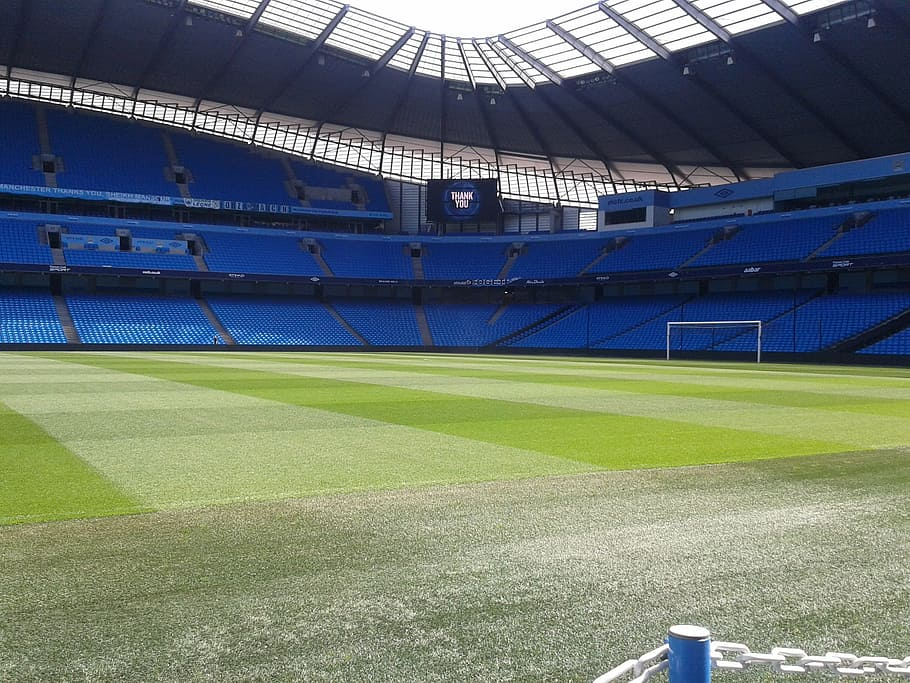

The biggest stadiums in England
Wembley
Wembley stadium is for sure the most famous venue in England. Branded by some people as “the home of football”, the stadium was originally built in 1923 and was used until 2000. In 2003 the Old Wembley was demolished and a new stadium (or as it is known the New Wembley) was founded and opened in 2007. It has the capacity of 90 000 seats, which makes it the second largest stadium in Europe. It hosts a large number of events every year from concerts to the final of the FA Cup in England. It also hosted the 2011 and 2013 UEFA Champions League Finals and also served as a temporary home for Tottenham Hotspur from 2017 to 2019, while they were waiting for their new stadium to be built. The venue also has its own metro and train station. One of its most distinct characteristics is its 133 metres high arch, which is one of the biggest in the world.
Emirates Stadium
Emirates Stadium is the home of the famous English Football Club Arsenal FC from its construction in 2006. It is one of the newest stadiums and most modern stadiums in England. The venue has the capacity of more than 60 000 seats, making it the fourth largest stadium in England. Since it is relatively new, a lot of the historic background of Arsenal had to be moved to the area. Since 2009, spectators can also observe the club museum, where all of the historic heritage of the club can be found. The venue has also hosted a number of international matches and famous concerts. It also has its own subway station.
Etihad Stadium
Etihad Stadium was built for the Commonwealth games in 2002. In 2003, Manchester City bought the venue and moved to play their home matches there. It has the capacity of more than 56 000 seats and it has also hosted a number of international matches, such as the 2008 UEFA League Final, concerts and a world title boxing fight. Manchester city doesn’t have a strong historic background and considering the fact that the stadium is relatively new, visitors should not expect to find exceptional amounts of trophies around the club’s museum. That being said, the venue is a state-of-the-art architectural masterpiece that is truly worth seeing.